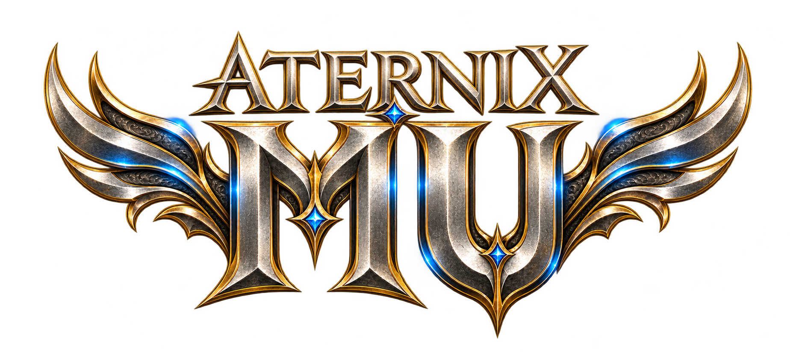

Postavy a souboje
Testujeme PvP, účinky buffů a nastavení jednotlivých tříd. Výsledné parametry budou součástí informací před otevřením.
TESTOVACÍ PROVOZ / SEASON 6

Svět MU Online, který znáš. Nový začátek, který tvoříme společně. Připravujeme AternixMU Season 6 a ladíme server před spuštěním.
EXP 300× · DROP 30 % · Termín veřejného spuštění oznámíme později.
01 / O PROJEKTU
AternixMU je připravovaný server MU Online Season 6. Pracujeme na nastavení postav, herním obsahu a pohodlném startu přes vlastní launcher.
Právě probíhá testování s EXP 300× a dropem 30 %. Pravidla a termín veřejného otevření zveřejníme později.
02 / AKTUÁLNĚ
Testujeme PvP, účinky buffů a nastavení jednotlivých tříd. Výsledné parametry budou součástí informací před otevřením.
Ladíme nabídku map, monstra a klientské texty. Cílem je přehledný a konzistentní herní zážitek.
Vlastní launcher porovnává herní soubory a stahuje potřebné změny z našeho aktualizačního serveru.
03 / KE STAŽENÍ
Testovací launcher AternixMU pro Windows. Nastavení rozlišení, zvuku a aktualizace na jednom místě.
ZIP obsahuje pouze launcher, nikoli kompletní hru. Je určený pro připravený klient AternixMU Season 6.
Windows · ZIP · testovací verze
main.exe a main.premium.MuLauncher.exe.Stažení z oficiálního repozitáře projektu na GitHubu.
04 / KOMUNITA
Oznámení, novinky z příprav a prostor pro hráče na jednom místě.
Přidej se k hráčům AternixMU. Sleduj novinky z testování a zapoj se do diskuze.
Připojit se na Discord